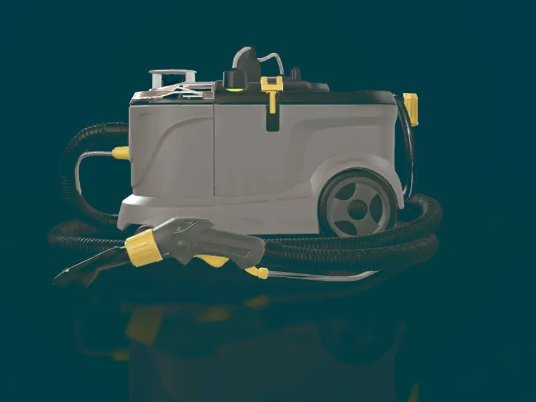
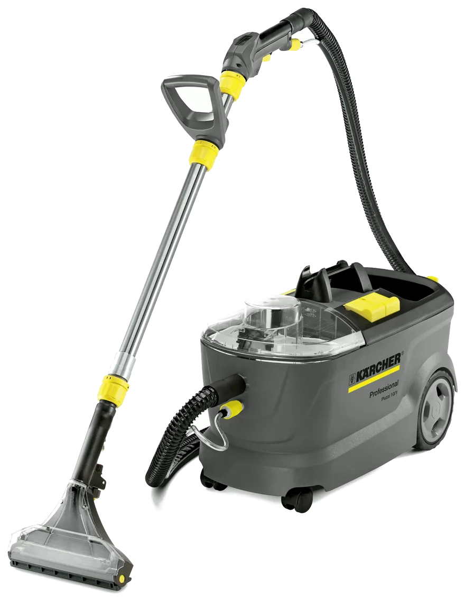
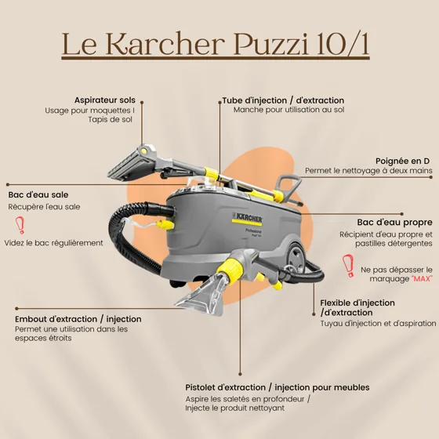

Accueil Location
À vous de jouer.
Vous louez le Kärcher Puzzi 10/1, vous tenez la machine, vous faites le passage. Elle arrive chez vous avec tout ce qu’il faut, et vous l’avez 24 heures à partir de la livraison. Si vous préférez qu’on s’en charge, c’est la prestation.
Le Kärcher
Puzzi 10/1.
Deux réservoirs, une gâchette, une turbine. Touchez une pièce pour savoir ce qu’elle fait, ou faites tourner la machine.

Faites tournerInjection 1 bar · Débit 1 L/min · Extraction par turbine · 10,5 kg
La visionneuse montre le Puzzi 10/1 en volume, rendu depuis un modèle 3D. Ses trois pièces cliquables se montrent d’un clic, et la machine pivote pour les exposer. Le pistolet, l’embout fauteuil et les accessoires de sol partent avec la location : ils sont en photo juste en dessous.
Louer le Kärcher PuzziTout ce qu’il vous faut
pour nettoyer vous-même.

Les trois pièces qui ne tiennent pas sur le modèle en volume plus haut. Elles partent avec la machine.
- Aspirateur sols · 240 mmPour les moquettes et les tapis de sol.
- Tube d’injection / d’extractionLe manche, pour travailler debout au sol.
- Poignée en DPermet le nettoyage à deux mains.
Ce qui part avec la machine
- 01Kärcher Puzzi 10/1, injecteur extracteur professionnel
- 02Flexible 2,5 m, suceur sol 240 mm, suceur fauteuil
- 03Pastilles Kärcher CarpetPro RM 760
- 04Manuel d’utilisation en PDF
Les pastilles RM 760 sont conçues pour l’injection extraction. Elles encapsulent la salissure grasse au lieu de la diluer, ce qui raccourcit le séchage.

La fiche de prise en main Chaque pièce nommée, son rôle expliqué. Elle part avec la machine. Voir en grandLes deux forfaits
Standard
6 390 F- 2 pastilles RM 760
- Suceur sol et suceur fauteuil
- 24 heures à partir de la livraison
Auto Home
7 990 F- 2 pastilles RM 760
- 1 brosse rotative et perceuse à batterie
- 1 bouteille de TASKI Tapi Extract
- 24 heures à partir de la livraison
Livraison 1 500 F sur Punaauia, Faa’a et Papenoo.
Louer le Kärcher PuzziChoisissez
Le forfait Standard, ou le forfait Auto Home avec la brosse rotative.
Réservez
Vous choisissez la date de livraison, et vous laissez vos coordonnées.
On livre
La machine arrive chez vous. Vous l’avez 24 heures à partir de la livraison.
Simple. Rapide. Clair.
Affichés.
Les deux forfaits sont au-dessus. Voici ce qui peut s’y ajouter, à l’unité.
| Pastille Kärcher RM 760 | 500 F |
|---|---|
| Buse à crevasse | 500 F |
| Livraison de la machine | 1 500 F |
Vous préférez ne pas tenir la machine ? Les prestations à domicile ont, elles aussi, leurs prix affichés.
Voir les prix des prestationsLa machine,
chez vous.
Livraison sur Punaauia, Faa’a et Papenoo. 24 heures à partir de la livraison.